Los módulos de Become a Rapid Developer
Módulo 1
Introducción: qué es Mendix, interface de la Academy, dónde encontrar los recursos.
Detalles del Módulo 1
📘 1.1 Welcome
Este apartado da la bienvenida al curso y establece el propósito de la ruta Rapid Developer. Mendix se presenta como una plataforma low-code que permite crear aplicaciones empresariales de forma rápida, colaborativa y visual. Se destaca que no es necesario tener experiencia previa en programación para comenzar, lo que democratiza el desarrollo de software. El enfoque está en aprender haciendo, con recursos interactivos y prácticos.
🧭 1.2 The Academy Interface
Aquí se explica cómo navegar por la Mendix Academy. Se muestra la estructura de los módulos, el sistema de seguimiento de progreso, los botones para avanzar o retroceder entre lecciones, y cómo acceder a recursos adicionales como foros, documentación y evaluaciones. Se enfatiza la importancia de marcar como completadas las lecciones para mantener un registro claro del avance.
🌐 1.3 Mendix Ecosystem

Este subtema ofrece una visión general del ecosistema Mendix, que incluye herramientas como Studio Pro (para desarrollo visual), Studio (para edición en la nube), Marketplace (para componentes reutilizables), y la Comunidad Mendix (para interacción entre desarrolladores). Se destaca cómo estas partes trabajan juntas para acelerar el desarrollo, fomentar la colaboración y facilitar la integración con sistemas empresariales.
💻 1.3.1 Download Mendix Studio Pro
Se guía al usuario paso a paso para descargar e instalar Mendix Studio Pro, el entorno principal de desarrollo. Se explican los requisitos del sistema, el proceso de instalación y cómo iniciar sesión con una cuenta Mendix. También se menciona la importancia de mantener la herramienta actualizada para acceder a nuevas funciones y mejoras.
Descargar Mendix Studio Pro👤 1.3.2 Set Up Your Community Profile
Este apartado enseña cómo configurar tu perfil en la Comunidad Mendix. Se recomienda agregar una foto, una biografía y tus intereses para facilitar la interacción con otros desarrolladores. Tener un perfil completo permite participar en foros, enviar ideas, recibir soporte y ganar visibilidad en la comunidad. También se menciona cómo vincular tu progreso académico al perfil.
📝 1.4 Summary
Se hace una recapitulación de los temas tratados: qué es Mendix, cómo funciona la Academy, qué herramientas conforman el ecosistema, y cómo comenzar con Studio Pro y la comunidad. Se refuerza la idea de que el desarrollo low-code es accesible, potente y colaborativo. Este resumen sirve como puente hacia los siguientes módulos más técnicos.
✅ 1.5 Knowledge Check
Se presenta una evaluación interactiva para validar lo
aprendido. Las preguntas cubren conceptos clave como el
propósito de Studio Pro, la visibilidad de componentes en el
Marketplace, y la función de la Comunidad. Ejemplos:
Pregunta 1: ¿Qué es Mendix Studio Pro?
- Una herramienta para analizar big data utilizando algoritmos avanzados de Business Intelligence.
- Una herramienta donde puede codificar su aplicación web usando HTML.
- ✔ Una herramienta para crear, desarrollar e implementar aplicaciones innovadoras a la velocidad de la luz.
- Una herramienta de CRM que ofrece capacidades de CRM listas para usar.
Pregunta 2: Quieres compartir algo en el Marketplace. Deseas que solo sea visible para las personas de tu empresa. ¿Es esto posible?
- No
- ✔ Sí
Pregunta 3: ¿Dónde puedes hacer preguntas a tus compañeros y enviar ideas para nuevas funciones para Mendix?
- Academia
- ✔ Comunidad
- Apoyo
- Mercado
Detalles del Módulo 2
🎯 2.0 Learning Objectives
Este módulo introduce los conceptos fundamentales de la planificación de aplicaciones en Mendix. Al finalizar, serás capaz de: comprender el ciclo de vida de una aplicación Mendix, definir casos de uso prácticos, aplicar metodologías ágiles de desarrollo, gestionar roles de usuario, construir equipos de trabajo colaborativos, crear historias de usuario y wireframes, y organizar el trabajo mediante épicas y sprints.
🔄 2.1 Application Lifecycle Management
Esta sección explica el ciclo de vida completo de una aplicación Mendix, desde la concepción hasta el despliegue y mantenimiento. Se cubren las diferentes fases: planificación, desarrollo, testing, despliegue y operaciones. Se enfatiza cómo Mendix facilita la gestión de cada etapa a través de sus herramientas integradas, permitiendo iteraciones rápidas y colaboración continua entre miembros del equipo.

📚 2.2 Our Use Case: LearnNow
Se presenta LearnNow, una aplicación de ejemplo que servirá como caso de estudio a lo largo del módulo. LearnNow es una plataforma de aprendizaje en línea que permite a los usuarios acceder a cursos, realizar seguimiento de su progreso y obtener certificaciones. Este caso práctico ayuda a contextualizar los conceptos teóricos en un escenario realista de desarrollo.
🚀 2.2.1 Create a New App
Guía paso a paso para crear una nueva aplicación en Mendix. Se explica cómo seleccionar una plantilla inicial, nombrar la aplicación, elegir el tipo de licencia y configurar los parámetros básicos. También se muestra cómo acceder al entorno de desarrollo y familiarizarse con la interfaz de Studio Pro recién creada.
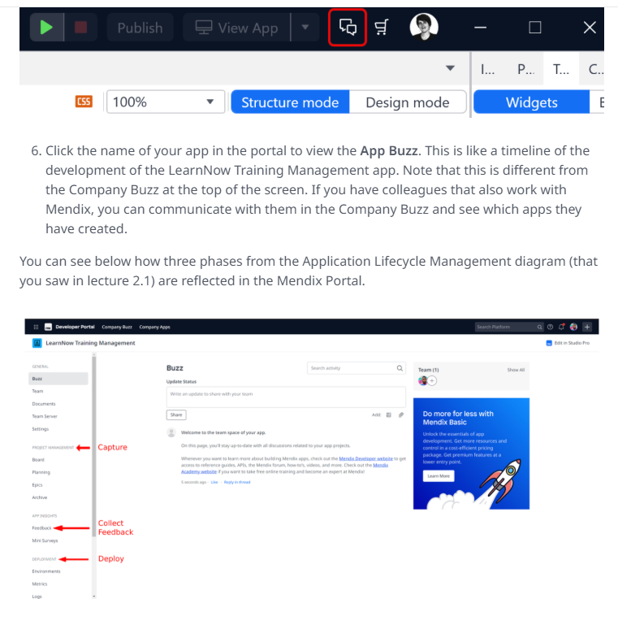👁️ 2.2.2 Explore the Overview
Esta sección enseña a navegar por la vista general de una aplicación Mendix. Se explican los diferentes paneles y secciones: el explorador de proyectos, el editor de páginas, el editor de microflows, y las propiedades de los elementos. Se destaca cómo esta vista unificada permite tener una comprensión completa de la estructura de la aplicación.
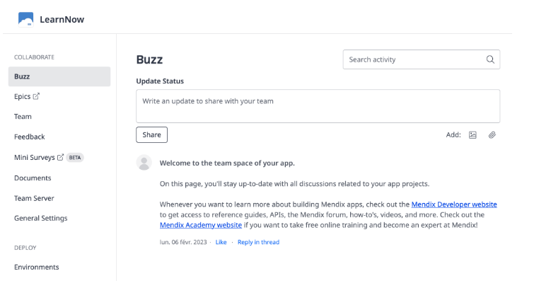👥 2.4 App Roles
Explicación detallada de los diferentes roles de usuario que pueden configurarse en una aplicación Mendix. Se cubren roles como Administrador, Usuario Final, Editor, etc., y cómo definir permisos específicos para cada uno. Se muestra cómo los roles controlan el acceso a datos, páginas y funcionalidades dentro de la aplicación.
🏗️ 2.3 Project Methodology
Se introduce la metodología ágil aplicada al desarrollo con Mendix. Se explican conceptos como Scrum, sprints, reuniones diarias y retrospectivas. Se muestra cómo Mendix se integra naturalmente con enfoques ágiles, permitiendo desarrollo iterativo, retroalimentación continua y entrega incremental de valor.
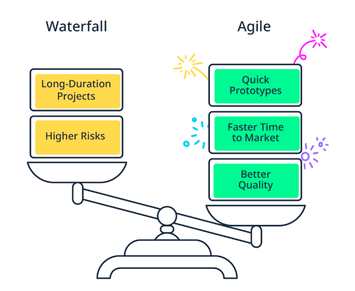🏗️ 2.4 App Roles
En Scrum, es importante tener pequeños equipos multifuncionales. De esa manera, hay una comunicación más efectiva, una documentación más fácil y una transferencia de conocimientos más rápida. Cada proceso de Scrum necesita un par de roles vitales para tener éxito: el Product Owner, el Scrum Master y el Equipo de Desarrollo. En conjunto, estos roles comprenden el Equipo Scrum.
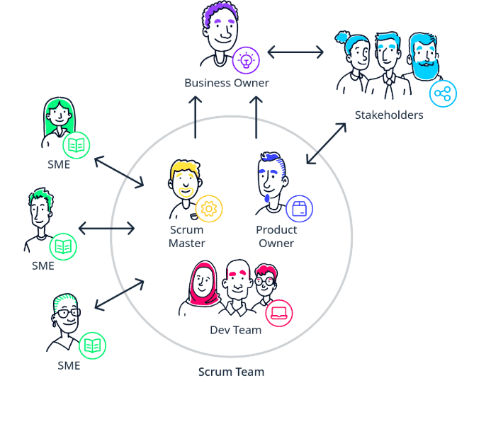🤝 2.5 Build a Team in Mendix
Esta sección enseña cómo crear y gestionar equipos de desarrollo en Mendix. Se explican los diferentes roles dentro del equipo (desarrollador, analista de negocio, tester) y cómo asignar responsabilidades. Se destaca la importancia de la colaboración y cómo Mendix facilita el trabajo en equipo mediante funciones de control de versiones y comentarios.
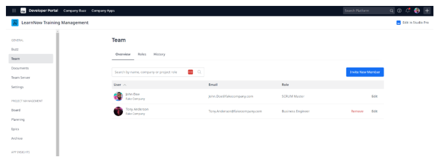📧 2.5.1 Invite Members to your App
Guía práctica para invitar miembros al equipo de desarrollo de una aplicación. Se muestra cómo enviar invitaciones por correo electrónico, asignar roles específicos a cada miembro y gestionar permisos de acceso. También se explica cómo los nuevos miembros pueden aceptar invitaciones y comenzar a colaborar en el proyecto.
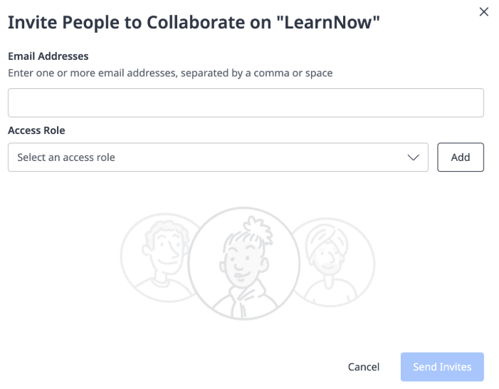📖 2.6 User Stories
Se profundiza en la creación y gestión de historias de usuario en Mendix. Se explica el formato estándar de una historia de usuario ("Como [rol], quiero [acción] para [beneficio]") y cómo descomponer funcionalidades complejas en historias manejables. Se muestra cómo utilizar el panel de Stories en Mendix para organizar y priorizar el trabajo.
👨💼 2.7 Jimmy's User Story
Caso práctico que presenta la historia de usuario de Jimmy, un usuario ficticio de la aplicación LearnNow. Se analiza en detalle: "Como estudiante, quiero poder ver mi progreso en los cursos para saber cuánto me falta para completarlos". Este ejemplo concreto ayuda a entender cómo transformar necesidades de usuarios en requisitos técnicos específicos.
✏️ 2.8 Create a Wireframe
Introducción a la creación de wireframes en Mendix. Se explica qué son los wireframes, su importancia en el diseño de interfaces y cómo crearlos utilizando las herramientas de Mendix. Se cubren conceptos básicos de diseño UX y cómo los wireframes ayudan a validar ideas antes del desarrollo completo.
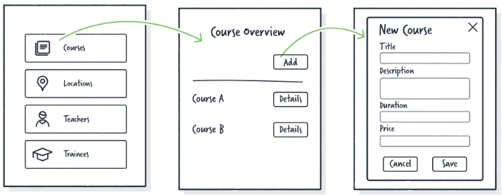🏠 2.8.1 Create Wireframes for your Homepage
Tutorial práctico para crear wireframes de la página de inicio de LearnNow. Se guía paso a paso en el diseño de los elementos principales: menú de navegación, lista de cursos, área de progreso y secciones destacadas. Se muestran las herramientas de arrastrar y soltar de Mendix para agregar y configurar widgets básicos.
📋 2.9 Epics
Explicación del concepto de épicas en la planificación de proyectos Mendix. Se define qué son las épicas (agrupaciones de historias de usuario relacionadas) y cómo ayudan a organizar el trabajo en componentes lógicos. Se muestra cómo crear y gestionar épicas en Mendix, y cómo relacionarlas con las historias de usuario específicas.
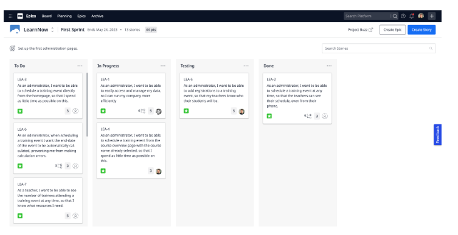➕ 2.10 Adding User Stories
Se profundiza en las técnicas para agregar y gestionar historias de usuario en Mendix. Se cubren métodos como la creación manual, importación desde hojas de cálculo, y duplicación de historias existentes. También se explican mejores prácticas para describir criterios de aceptación y definir estimaciones de esfuerzo.
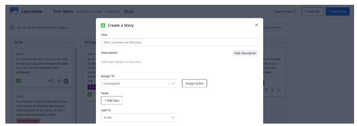✨ 2.10.1 Add your First User Story
Tutorial práctico para crear la primera historia de usuario en el proyecto LearnNow. Se guía a través del proceso completo: definir el título, descripción, criterios de aceptación, asignar prioridad y estimar esfuerzo. Se muestra cómo vincular la historia de usuario con épicas y sprints específicos.
📥 2.10.2 Import User Stories
Instrucciones para importar múltiples historias de usuario desde archivos externos (como Excel o CSV). Se explica el formato requerido para la importación, cómo mapear columnas y validar la información importada. Esta técnica es útil para migrar historias de usuario desde otras herramientas de gestión de proyectos.
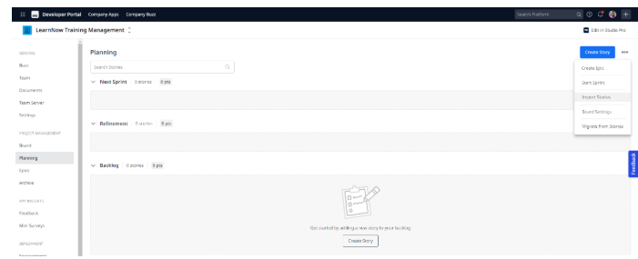🏗️ 2.10.3 Create Epics
Guía práctica para crear épicas en Mendix. Se muestra cómo definir épicas para agrupar funcionalidades relacionadas (como "Gestión de Cursos", "Seguimiento de Progreso", "Sistema de Certificaciones"). Se explica cómo asignar historias de usuario a épicas y cómo utilizar las épicas para planificar releases mayores.
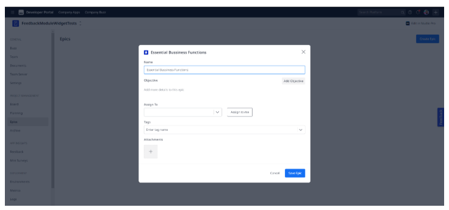🏃 2.10.4 Start a New Sprint
Explicación de cómo iniciar y gestionar sprints en Mendix. Se cubre el proceso de planificación de sprint: seleccionar historias de usuario para incluir, definir objetivos del sprint, asignar tareas a miembros del equipo y establecer fechas de inicio y fin. También se muestra cómo realizar seguimiento del progreso durante el sprint.
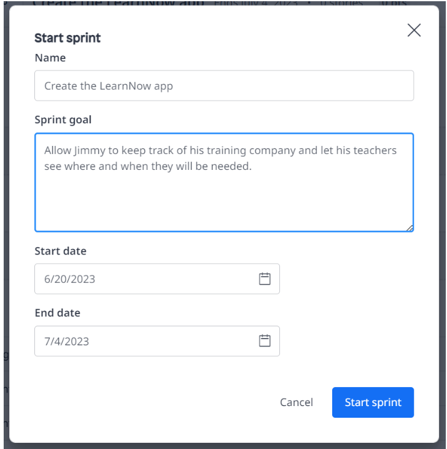📝 2.11 Summary
Resumen de los conceptos clave del módulo: desde la creación de una aplicación hasta la planificación detallada mediante historias de usuario, épicas y sprints. Se refuerza la importancia de la metodología ágil y la colaboración en equipo. Este resumen prepara para el siguiente módulo que se enfocará en el desarrollo práctico de la aplicación.
✅ 2.12 Knowledge Check
Se presenta una evaluación interactiva para validar lo
aprendido. Las preguntas cubren conceptos clave como la
gestión del ciclo de vida de aplicaciones, creación de
historias de usuario, configuración de roles, y metodologías
ágiles. Ejemplos:
Pregunta 1: ¿Cuál es el propósito principal del Application Lifecycle Management en Mendix?
- Gestionar únicamente la fase de desarrollo de la aplicación.
- Controlar solo los costos y presupuestos del proyecto.
- ✔ Gestionar todas las fases de la aplicación desde la planificación hasta el mantenimiento.
- Administrar exclusivamente los permisos de los usuarios finales.
Pregunta 2: ¿Qué formato sigue una historia de usuario bien definida?
- "El sistema debe permitir X funcionalidad"
- ✔ "Como [rol], quiero [acción] para [beneficio]"
- "Desarrollar la función Y en Z tiempo"
- "Implementar módulo de seguridad"
Pregunta 3: ¿Qué son las épicas en la planificación de proyectos Mendix?
- Historias de usuario muy largas y complejas
- Informes de errores del sistema
- ✔ Agrupaciones de historias de usuario relacionadas
- Reuniones de planificación mensuales
Módulo 2: Planificación de Aplicaciones
Agile y colaboración entre TI y negocio. Aprende a planificar aplicaciones Mendix usando metodologías ágiles, historias de usuario y gestión de equipos.
Detalles del Módulo 3
🎯 3.0 Learning Objectives
Este módulo introduce los fundamentos prácticos del desarrollo low-code en Mendix. Al finalizar, serás capaz de: navegar eficientemente por Mendix Studio Pro, crear páginas web utilizando layouts con columnas y filas, agregar y configurar botones funcionales, gestionar múltiples páginas y navegación entre ellas, identificar y corregir errores, utilizar el Team Server para control de versiones, y realizar commits de tus cambios de manera colaborativa.
🏗️ 3.1 The Next Phase: Building your App
Esta sección marca la transición de la planificación a la construcción práctica de la aplicación. Se explica cómo llevar las historias de usuario y wireframes creados en el módulo anterior a una aplicación funcional. Se enfatiza el enfoque iterativo del desarrollo low-code y cómo Mendix permite construir prototipos funcionales rápidamente.
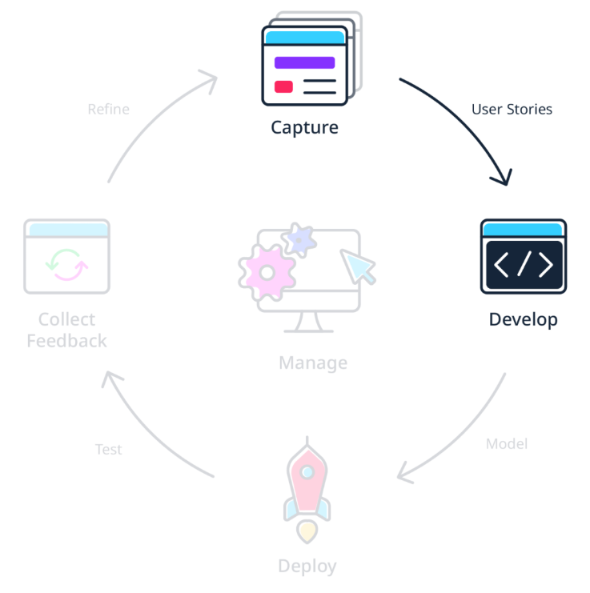🔍 3.2 Explore Mendix Studio Pro
Tour guiado por la interfaz de Mendix Studio Pro. Se explican las principales áreas de trabajo: el Domain Model, Page Editor, Microflow Editor, y Properties Pane. Se muestra cómo personalizar el workspace según las preferencias del desarrollador y acceder a las herramientas más utilizadas en el desarrollo diario.
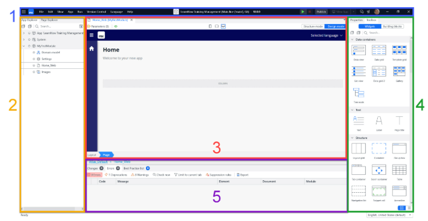🏠 3.2.1 Create the Home Page of your App
Tutorial práctico para crear la página de inicio de la aplicación LearnNow. Se guía paso a paso en la selección de templates, configuración de layouts básicos, y establecimiento de la página como home en la configuración de navegación. Se introducen conceptos fundamentales de diseño de interfaz de usuario.
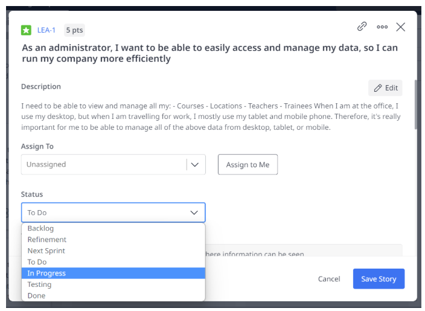📐 3.3 Columns and Rows
Explicación detallada del sistema de layouts basado en columnas y filas en Mendix. Se cubren los diferentes tipos de contenedores, cómo crear estructuras responsivas, y mejores prácticas para organizar elementos visuales. Se muestra cómo utilizar el sistema de grillas para crear interfaces profesionales y adaptables.
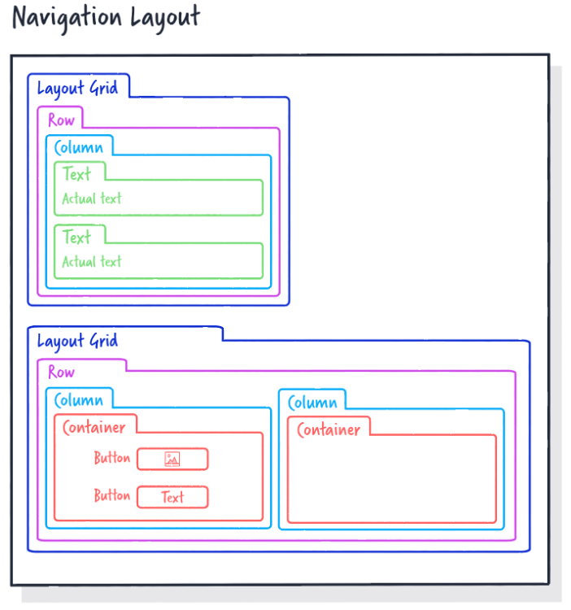📏 3.3.1 Add Columns to your App
Ejercicio práctico para implementar columnas en la página de inicio. Se enseña a dividir el espacio en secciones, ajustar proporciones, y organizar widgets dentro de las columnas. Se explican técnicas para mantener consistencia visual y asegurar que el diseño sea responsive en diferentes dispositivos.
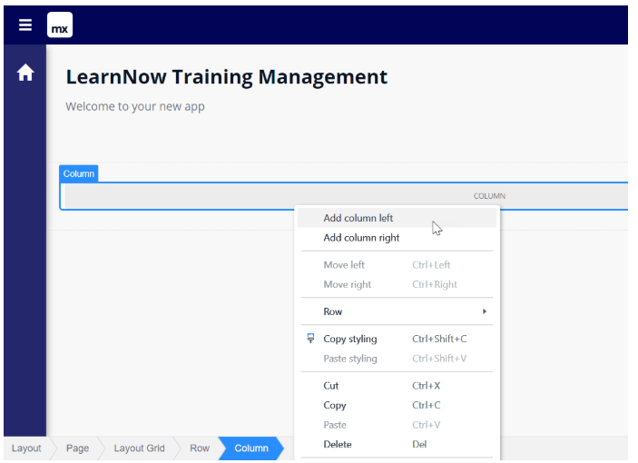🔘 3.4 Buttons
Introducción a los diferentes tipos de botones disponibles en Mendix y sus casos de uso. Se cubren botones primarios, secundarios, de enlace, y sus variantes de estilo. Se explica cómo configurar acciones asociadas a los botones y definir comportamientos de interacción con el usuario.
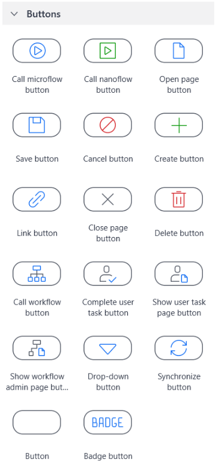🖱️ 3.4.1 Add Buttons to your Home Page
Tutorial práctico para agregar botones funcionales a la página de inicio de LearnNow. Se muestra cómo colocar botones estratégicamente, configurar sus propiedades visuales (color, tamaño, iconos), y definir acciones básicas. Se enfatiza en la importancia de los call-to-action efectivos.
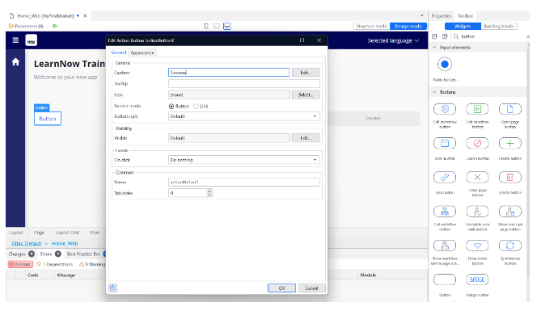📄 3.5 Pages
Conceptos avanzados sobre creación y gestión de páginas en Mendix. Se explican los diferentes tipos de páginas (formularios, listas, dashboards), cómo organizarlas en la estructura de navegación, y técnicas para mantener consistencia entre páginas mediante el uso de layouts y building blocks reutilizables.
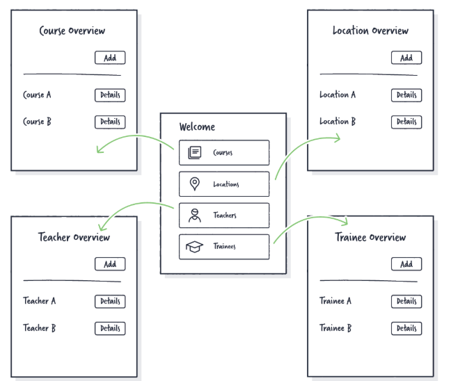🆕 3.5.1 Create Pages
Guía completa para crear nuevas páginas en la aplicación. Se cubre la selección de templates apropiados, configuración de títulos y URLs, y organización en carpetas lógicas. Se muestra cómo crear páginas para diferentes funcionalidades del caso LearnNow (lista de cursos, perfil de usuario, progreso).
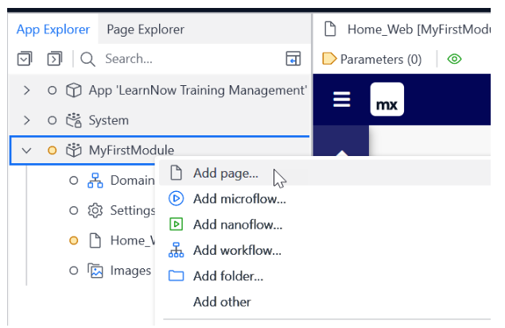🔗 3.5.2 Link your Pages to the Buttons
Tutorial para conectar la navegación entre páginas mediante botones. Se enseña a configurar la acción "Show Page" en los botones, pasar parámetros entre páginas, y manejar diferentes flujos de navegación. Se incluyen ejemplos prácticos de navegación forward y backward.

⚠️ 3.6 Errors
Introducción al sistema de manejo de errores en Mendix. Se explica cómo identificar diferentes tipos de errores (de compilación, de consistencia, de runtime), utilizar el Error Pane para diagnosticar problemas, y aplicar fixes recomendados. Se enfatiza en la importancia de resolver errores antes del commit.
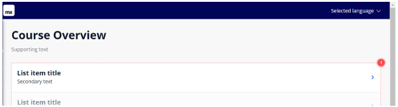☁️ 3.7 Team Server
Explicación del Team Server como sistema de control de versiones integrado en Mendix. Se cubren conceptos fundamentales de colaboración: branches, commits, updates, y merges. Se muestra cómo el Team Server facilita el trabajo en equipo y mantiene la integridad del proyecto.
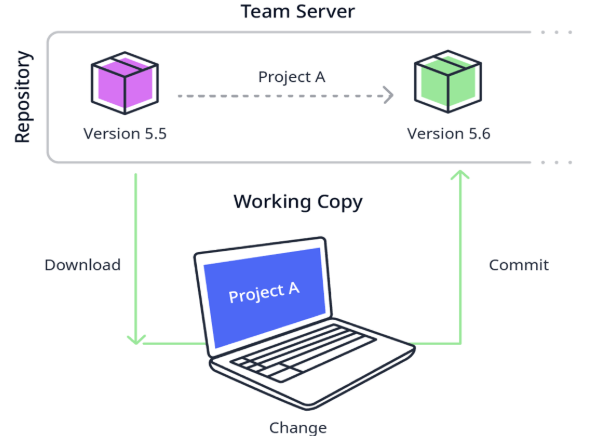💾 3.7.1 Commit changes
Guía práctica para realizar commits de cambios en el Team Server. Se explica cómo escribir mensajes de commit descriptivos, seleccionar los cambios a incluir, y verificar el historial de commits. Se enfatizan las mejores prácticas para commits frecuentes y significativos.
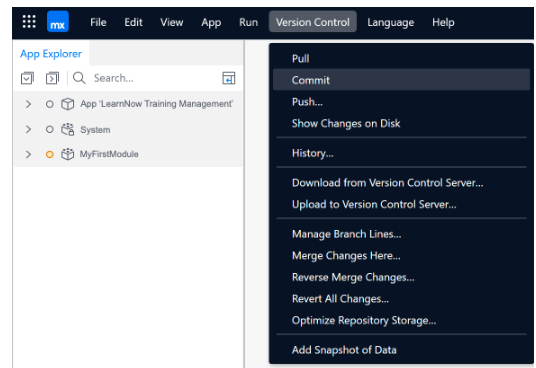🔎 3.8 Check Your Work
Técnicas para revisar y validar el trabajo desarrollado. Se cubren métodos de testing básicos: preview en browser, verificación de funcionalidades, testing de navegación, y revisión de consistencia visual. Se introduce el concepto de "click-through prototyping" para validar con stakeholders.

📝 3.9 Summary
Recapitulación de los conceptos fundamentales del desarrollo low-code cubiertos en el módulo. Se refuerza el flujo de trabajo desde la creación de páginas hasta el commit de cambios, destacando la potencia de Mendix para construir interfaces funcionales rápidamente. Preparación para módulos más avanzados de modelado de datos.
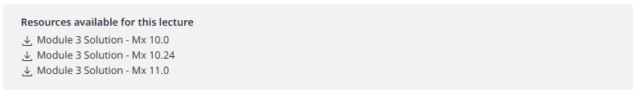✅ 3.10 Knowledge Check
Se presenta una evaluación interactiva para validar la comprensión de los conceptos del módulo. Las preguntas cubren temas como: creación de layouts con columnas, configuración de botones, gestión de páginas, manejo de errores, y uso del Team Server. Ejemplos:
Pregunta 1: A page is responsive when:
- It allows dynamic data to be displayed.
- It rotates as you rotate your mobile.
- ✔ It works and looks good on all devices.
- It includes user interaction.
Pregunta 2: How many rows can a page have?
- 4
- ✔ As many as you need
- 1
- 12
Pregunta 3: It is possible to place multiple widgets in a container.
- False
- ✔ True
Pregunta 4: You downloaded the latest version of the project from the Team Server and made some changes to the app. What do you need to do next so that your team members can view your changes?
- Synchronize with the Team Server
- Publish your app to the cloud
- Update the user story from Running to Done
- ✔ Commit your app to the Team Server
Módulo 3: Fundamentos de Desarrollo Low-Code
Aprende los fundamentos prácticos del desarrollo low-code: creación de páginas, layouts, botones y navegación en Mendix Studio Pro.
Detalles del Módulo 4
🎯 4.0 Learning Objectives
Este módulo se enfoca en el manejo de datos dinámicos en aplicaciones Mendix. Al finalizar, serás capaz de: entender cómo mostrar datos dinámicos en páginas, crear y configurar un Domain Model, definir diferentes tipos de atributos, conectar galerías con fuentes de datos, utilizar parámetros para mostrar datos específicos, ejecutar y probar tu aplicación, crear menús de navegación, trabajar con objetos y crear páginas para editar y crear nuevos registros.
📊 4.1 Dynamic Data on Pages
Introducción al concepto de datos dinámicos y cómo se diferencian de los datos estáticos. Se explica cómo Mendix permite mostrar información que cambia según los datos almacenados en la base de datos, y cómo los widgets pueden conectarse a estas fuentes de datos para crear experiencias interactivas y personalizadas para los usuarios.
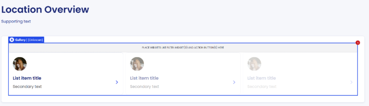🏗️ 4.2 The Domain Model
Explicación detallada del Domain Model como el corazón de cualquier aplicación Mendix. Se cubren los conceptos fundamentales de entidades, atributos y asociaciones, y cómo representan la estructura de datos de la aplicación. Se muestra cómo crear y organizar entidades para modelar correctamente el dominio del negocio.
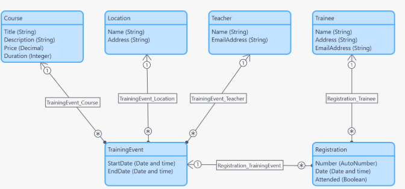📋 4.3 Attribute Types
Guía completa sobre los diferentes tipos de atributos disponibles en Mendix. Se explican atributos primitivos (String, Integer, Decimal, Boolean, DateTime), enumeraciones y tipos especializados. Se cubren las consideraciones para seleccionar el tipo de atributo apropiado según el tipo de dato que se necesita almacenar.
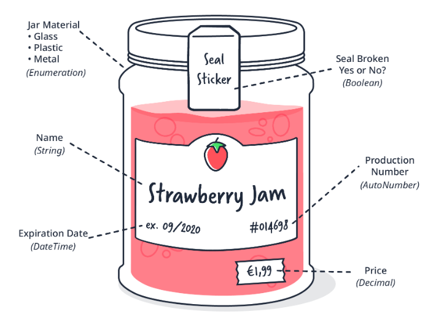⚙️ 4.3.1 Define Attribute Types
Ejercicio práctico para definir tipos de atributos en las entidades del Domain Model. Se muestra cómo agregar atributos a entidades existentes, configurar sus propiedades (longitud, formato, valores por defecto) y aplicar validaciones. Se utilizan ejemplos del caso LearnNow para atributos de cursos y usuarios.
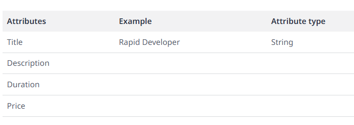🔄 4.4 Display Dynamic Data
Técnicas para mostrar datos dinámicos en las páginas de la aplicación. Se explican los diferentes tipos de contenedores de datos (data views, list views, galleries) y cómo configurar su fuente de datos. Se cubre el concepto de contexto y cómo los datos fluyen a través de las páginas y microflows.
🔗 4.4.1 Create and Connect Entities
Tutorial práctico para crear asociaciones entre entidades en el Domain Model. Se muestra cómo establecer relaciones uno-a-muchos y muchos-a-muchos, y cómo estas relaciones se reflejan en la interfaz de usuario. Se utiliza el ejemplo de cursos y módulos en LearnNow para demostrar las conexiones.
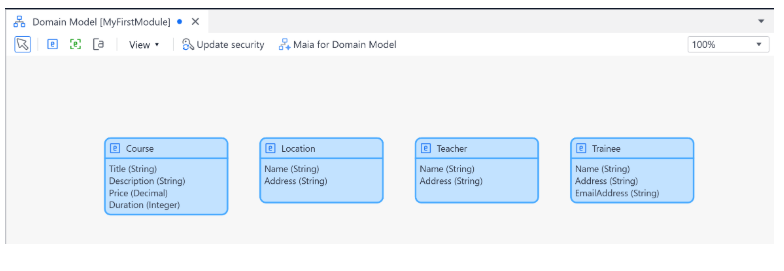🖼️ 4.4.2 Connect the Galleries
Guía paso a paso para conectar galerías con fuentes de datos. Se enseña cómo configurar list views y template grids para mostrar listas de objetos, personalizar la visualización de cada elemento, y agregar funcionalidades como filtrado y ordenamiento. Se implementa una galería de cursos en LearnNow.
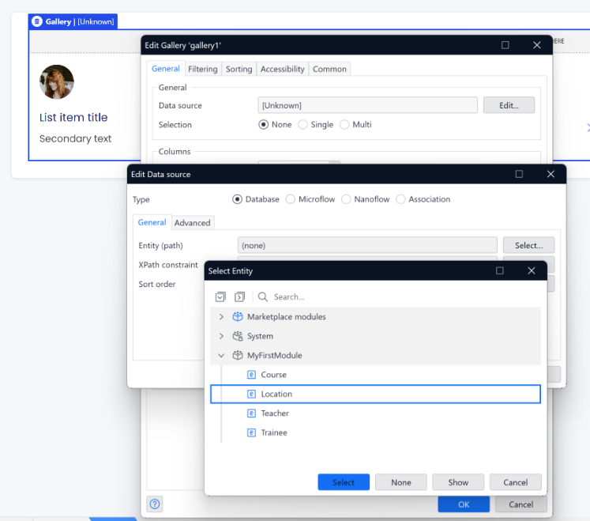🎯 4.4.3 Display Dynamic Data with Parameters
Técnicas avanzadas para mostrar datos específicos utilizando parámetros. Se explica cómo pasar parámetros entre páginas, filtrar datos basados en criterios específicos, y crear vistas detalladas de objetos individuales. Se implementa la funcionalidad de ver detalles de un curso específico en LearnNow.
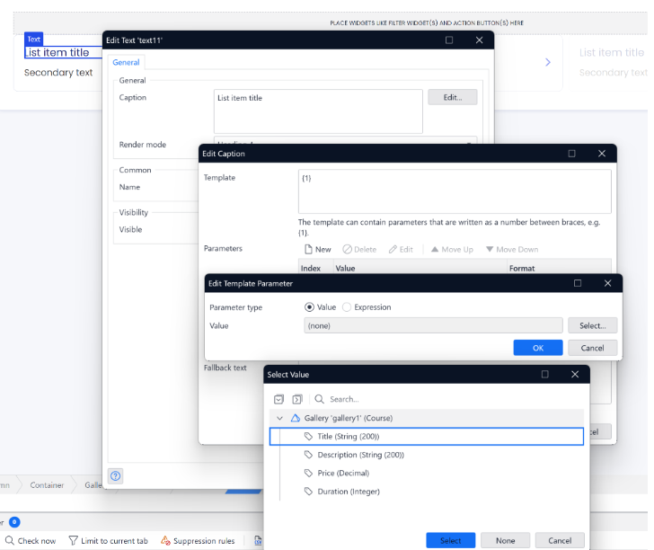🚀 4.5 Run your App
Procedimiento completo para ejecutar y probar la aplicación. Se cubre cómo iniciar la aplicación en diferentes entornos (local, sandbox), realizar testing de las funcionalidades implementadas, identificar y corregir errores en tiempo de ejecución, y utilizar las herramientas de debugging integradas en Mendix.
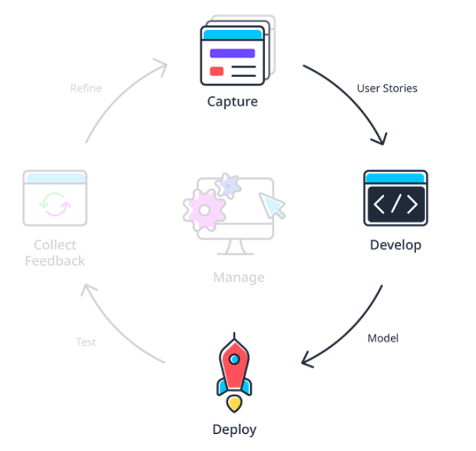🧭 4.6 The Navigation Menu
Diseño e implementación del menú de navegación de la aplicación. Se explican los diferentes tipos de navegación (responsiva, sidebar, tab bar) y cómo configurar la estructura de menús en Mendix. Se cubren mejores prácticas para crear una experiencia de navegación intuitiva y consistente.

⚡ 4.6.1 Create the Navigation Menu
Ejercicio práctico para crear y personalizar el menú de navegación de LearnNow. Se muestra cómo agregar items de menú, organizarlos en grupos, configurar iconos y permisos de acceso, y asegurar que la navegación sea responsive en dispositivos móviles.
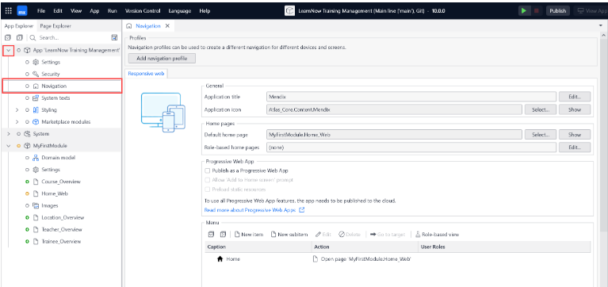📦 4.7 Objects
Conceptos fundamentales sobre objetos en Mendix. Se explica la diferencia entre entidades (definiciones) y objetos (instancias), cómo se crean y gestionan los objetos en tiempo de ejecución, y cómo persisten en la base de datos. Se cubre el ciclo de vida completo de un objeto.
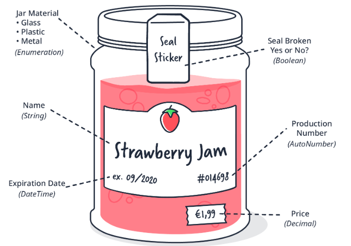🆕 4.7.1 Use Buttons to Create Objects
Tutorial para implementar funcionalidad de creación de objetos mediante botones. Se muestra cómo configurar botones para crear nuevos objetos, inicializar sus atributos, y guardarlos en la base de datos. Se implementa la funcionalidad de "Crear nuevo curso" en LearnNow.
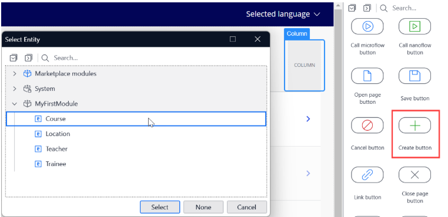✏️ 4.8 New/Edit Pages
Diseño y creación de páginas para crear y editar objetos. Se explican los patrones comunes para formularios de entrada de datos, técnicas de validación, y manejo de diferentes estados (nuevo vs. edición). Se cubren mejores prácticas para crear experiencias de usuario efectivas en formularios.
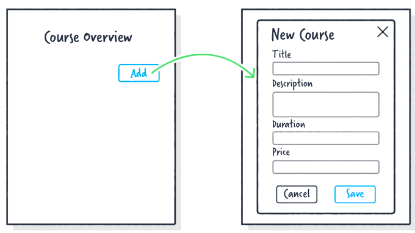🛠️ 4.8.1 Create New/Edit Pages
Implementación práctica de páginas para crear y editar cursos en LearnNow. Se muestra cómo diseñar formularios eficientes, configurar data views para el contexto de edición, implementar validaciones de datos, y manejar las acciones de guardar y cancelar.
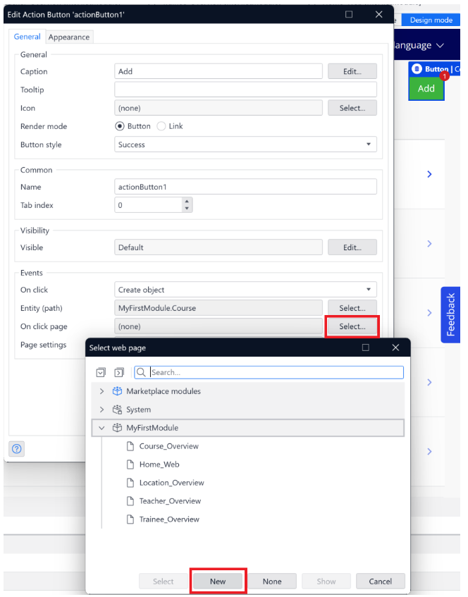📝 4.9 Summary
Recapitulación de los conceptos clave del módulo sobre trabajo con datos dinámicos. Se refuerza el flujo completo desde el modelado de datos en el Domain Model hasta la visualización y edición en la interfaz de usuario. Preparación para módulos más avanzados sobre lógica de negocio y microflows.
✅ 4.10 Knowledge Check
Evaluación interactiva para validar la comprensión de los conceptos del módulo 4. Las preguntas cubren temas como: Domain Model, tipos de atributos, visualización de datos dinámicos, navegación, creación de objetos y páginas de edición.
Question 1: A list view is a widget used to
- Display bullet points
- Display dynamic data
- Change text from horizontal to vertical view
- Display static text
Pregunta 2: The value 1.23 could be stored in an attribute of the type:
- Long
- AutoNumber
- Decimal
- Integer
Pregunta 3: The attribute type Enumeration is used to store:
- Automatically generated positive or negative whole number
- A whole number that can only be positive
- A positive or negative number
- A list of predefined values
Pregunta 4: Which name should you use for an entity representing a maintenance report?
- Maintenance-Report
- Maintenance Report
- Maintenance_Report
- MaintenanceReport
Módulo 4: Trabajando con Datos Dinámicos
Aprende a manejar datos dinámicos, crear Domain Models, definir atributos y conectar interfaces con fuentes de datos en Mendix.
Módulo 5
Modelado de datos y lógica de negocio.
Módulo 6
Creación de interfaces de usuario.
Módulo 7
Integración con servicios externos.
Módulo 8
Pruebas y depuración de aplicaciones.
Módulo 9
Despliegue y gestión de aplicaciones.
Módulo 10
Mejores prácticas y casos de uso.
Módulo 11
Preparación para la certificación Rapid Developer.